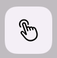

Select a Layer or Group
App Version: 1.07
1. Show the layer panel.Single tap the item of a layer or group can toggle its selection status. When a layer or group is selected, its background color is orange.
2.
Single tap the layer selection icon

can toggle the layer selection mode on and off.When the layer selection mode is on: The background color of the layer selection icon is orange. Tap a shape on the canvas can select it. Tap the blank area on the canvas can select the canvas. Tap the area around the canvas can deselect all layers and groups. (This method sometimes does not work. It is depended on the canvas size.)